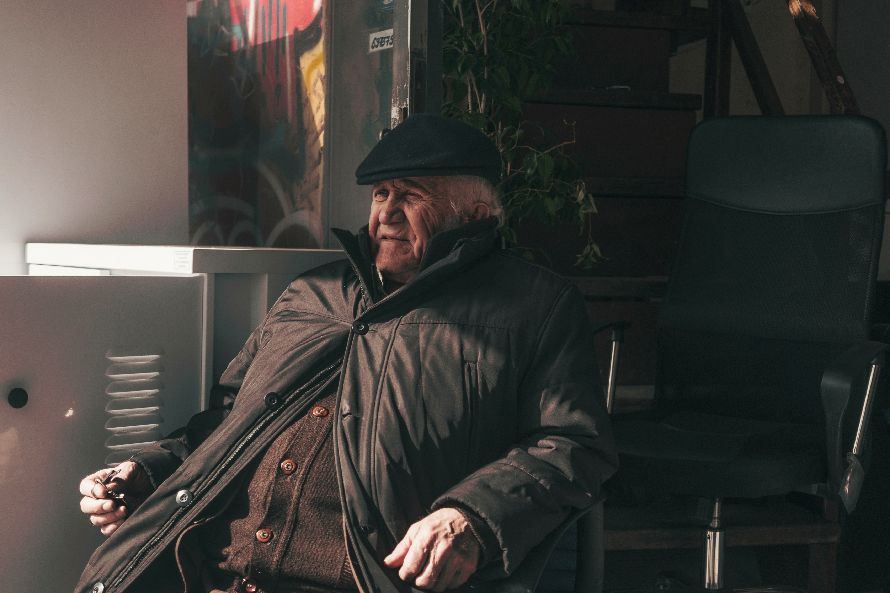

Nossas Histórias
Tem afeto e carinho.
 Texto imagem
Texto imagem

Texto imagem
Sr. João gabriel
Morador de quatis a 28 anos, tem um loja de bicicletas e seus maiores valores são o amor pela cidade
-
 58 anos
58 anos
- Moradora do São benedito
Texto imagem
Sr. Helena
Helena tem uma livraria na cidade a 65 anos nascida e criada em quatis é uma pessoa que ama a cidade
-
 58 anos
58 anos - Moradora do São benedito